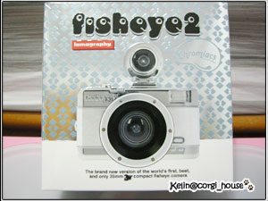
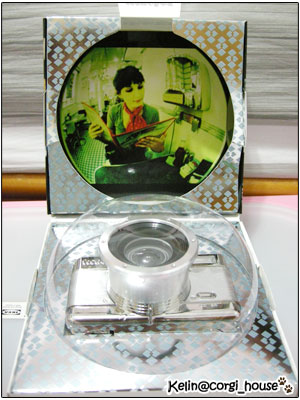
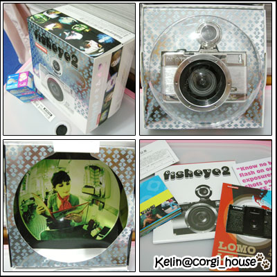
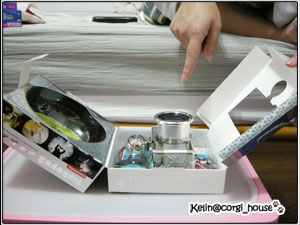
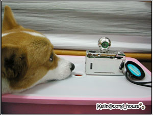
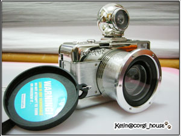
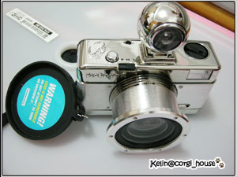
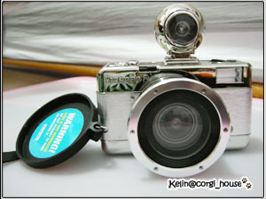

真是意外！今年聖誕節因為阿嬤的事～連安排一家三口去花蓮渡假都取消了！！
想不到我家老大還偷偷了買了禮物 謝謝泥!!!感動啊!
謝謝泥!!!感動啊!
可是我沒有準備耶~ 慘了......
慘了......
去吃飯的路上猛哥塞了這台 fisheye 2 給我 ~ 哇屋
~ 哇屋

想要這台很久了! 但一直被朋友勸退 ..說這很快就玩膩了! 會被我丟在旁邊
但我純粹想要拿來拍摩卡卡，覺得魚眼拍出來的狗子都好可愛！
我的是全銀色的~好閃呀~~打開來還是個魚眼的造型的盒子!!

裡面附了一些使用說明跟圖片可以看! 這次猛哥很聰明還記得順便買了! 兩捲400的底片
這種小細心的事最值得誇講了~哈哈 (講得你很笨的樣子!)

好小子摩卡卡又來參一卡!! 一臉就寫著...麻麻是吃的嗎? 是給我吃的嗎? 
今天重點是拆老木的的禮物耶~去旁邊玩球去! 

拔拔說：這不是卡卡的!! 不可以吃~摩卡卡不可以咬咬歐!

哈哈哈!! 又來了!! 又裝個屎臉
有人記得上次ebox的開箱文嗎? 這小子一看到不是吃的...就會變臉!! 好像老娘欠他錢一樣
笑屎我了!! 現實鬼! 

  
實體出現嘍!!我只能說好像玩具歐!!! 塑膠材質，又超輕的，感覺很容易壞!! 
參考網路上寫的規格 說真的！我有看沒有懂！！哈哈 
重量: 0.5lb (0.23kg)
底片格式: 35mm
涵蓋角度: 170度
對焦距離: 10mm 至無限遠
光圈: f/8
快門速度: 1/100, “B“
閃光燈: 標準熱靴插座及內置閃光燈
電源: 1顆"AA" 電池
長時間曝光鍵可令你在同一格底片上無限次拍攝
只需以一般底片(軟片)及沖印方法即可

這是我的第一台LOMO相機
我也不是玩攝影的！什嘛都不懂
上網參考了玩家的意見，也是一頭霧水！哈
但衝著玩LOMO 就是無法預期會拍出什嘛鬼玩意兒來！ 我也要來試試
我也要來試試
反正拍不好，也有另一種FU吧！  我已經做好要燒底片的心理準備了！！
我已經做好要燒底片的心理準備了！！
昨天拿到手有拍幾張！不過～很空虛， 也看不到自己拍出什嘛鬼東西
也看不到自己拍出什嘛鬼東西
等出大太陽我要帶摩卡去戶外試拍！！洗出來再給大家看 
燒錢去啦！！
辣個~如果有玩Fisheye的捧油~歡迎給點指教..都蝦啦!